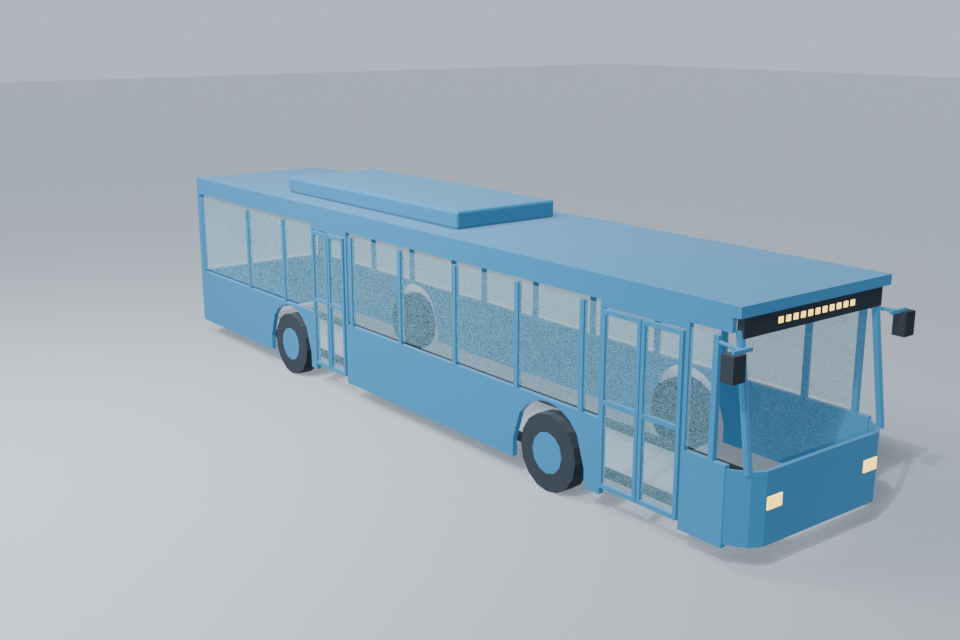
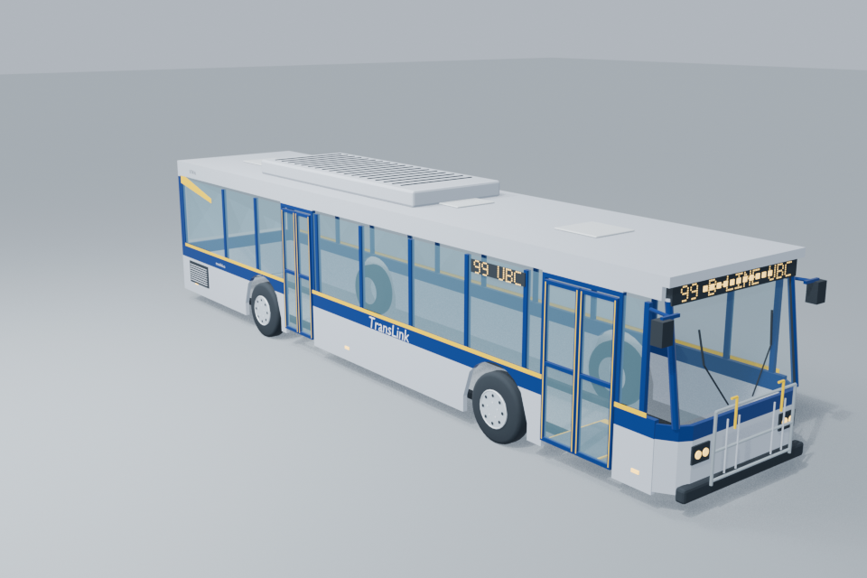
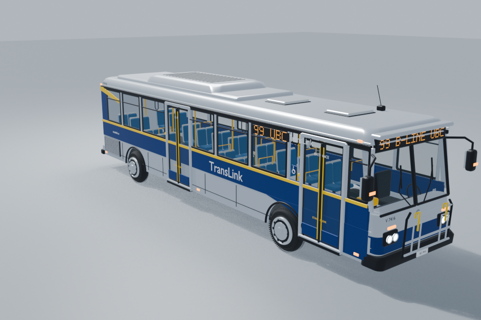
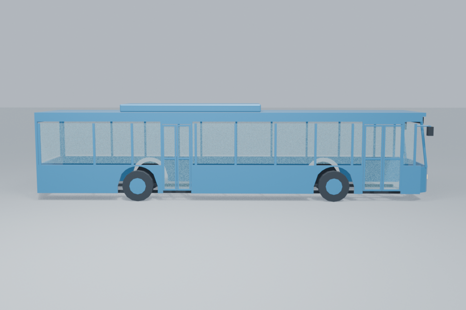
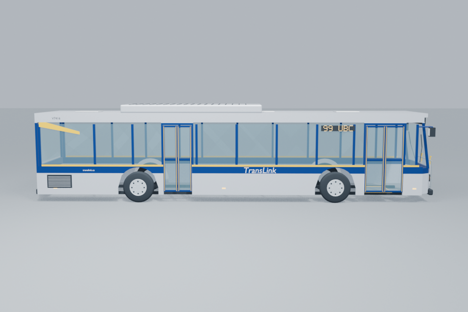
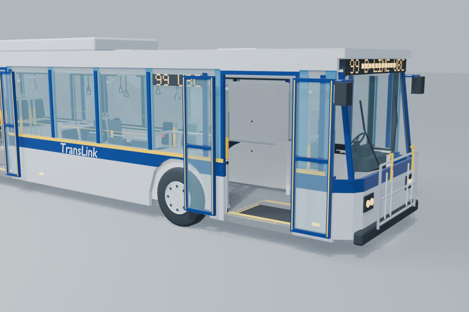
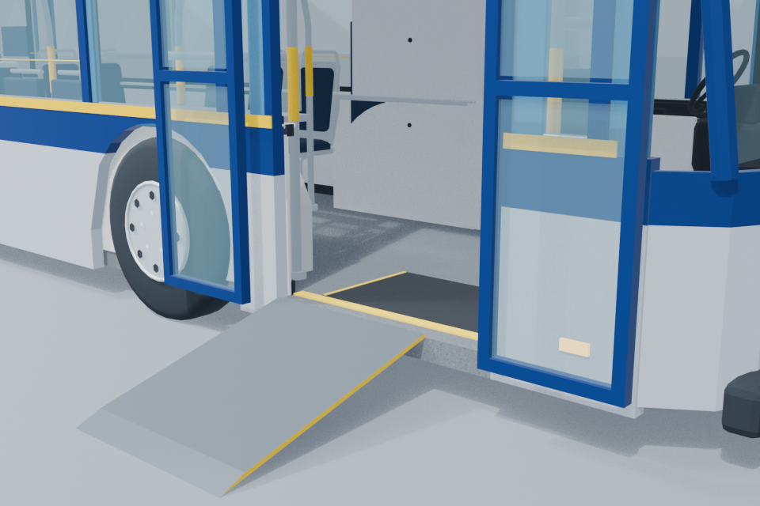
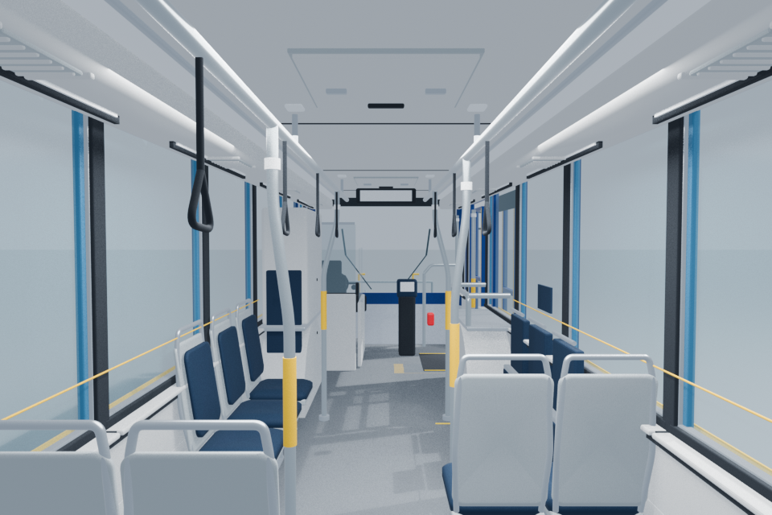
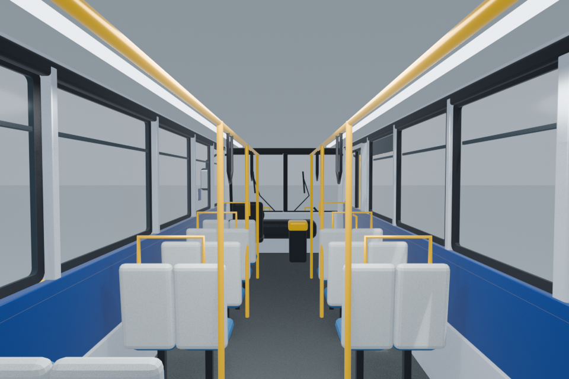

Neutral daylight. The hybrid retains the accepted Atlas interior and exact boarding geometry. Film is a reference donor; its shell is not attached. Interior views use the same lens and eye height above each actual floor.








